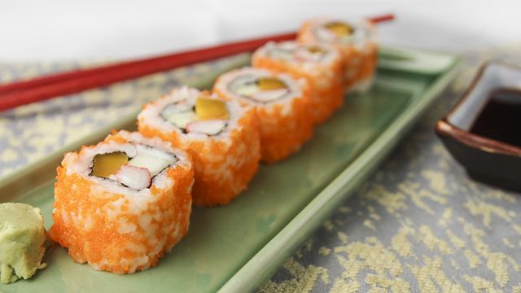

California Maki

Easy to make, easy to eat. Leftover ingredients make for a nice nighttime snack.
Recipes
- short-grain rice
- 1 1/2 cups water, cold
- 4 tablespoons rice vinegar
- 3 tablespoons granulated sugar
- 1 tablespoon salt
- 2 cups sushi rice
- 2 pieces ripe mango, strips
- 260 grams of crab sticks, cut into two
- 1 piece cucumber, seed removed and julienned
- 1 pack dried seaweed, unseasoned
- orange fish roe
- sushi mat
Steps
- Make the sushi rice: Wash the rice and prepare to cook in a rice cooker. Add water then cook until water has evaporated.
- Combine the vinegar, sugar and salt.
- Once the rice is cooked, place it in a small bowl.
- Pour the vinegar mixture over the rice and mix using a wooden spoon.
While mixing the rice, it is important to use a fan to cool the rice.
This makes the rice shiny and it also prevents it from being mushy. Set aside and cover with a damp cloth.
- Prepare the roll: Lay the sushi mat on the table. Cut the nori in half and lay the nori on the bottom part of the mat.
Lightly wet your fingers and add a small amount of rice. Spread the rice all throughout the nori. Sprinkle the masago and spread it evenly. Flip the rice and masago mixture.
- With the rice and masago facing down already, arrange the mango strips, kani and cucumber at the bottom of the nori.
- To roll, tuck your thumbs under the bamboo mat and use them to lift the mat and rice over the filling, while using your other fingers to hold it in place. Use the mat to continue rolling until you reach the end of the nori.
- Press the mat so it the roll sticks together. Slowly peel away the mat. Use a sharp knife to cut the sushi roll.